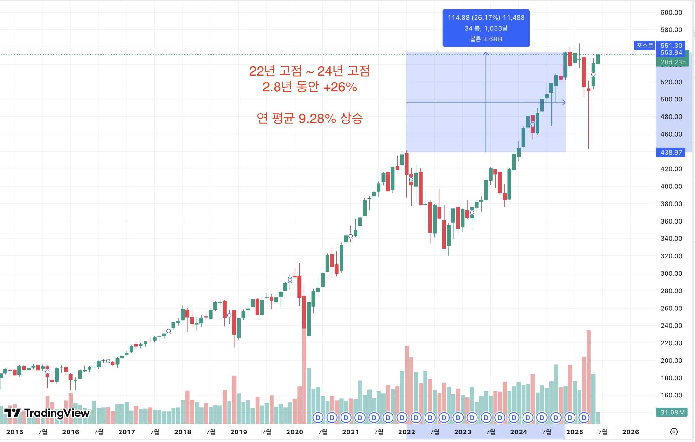
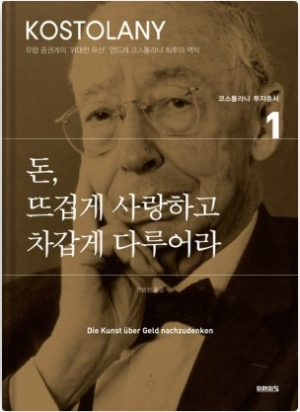
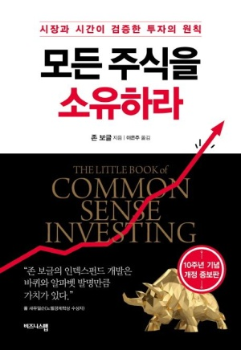
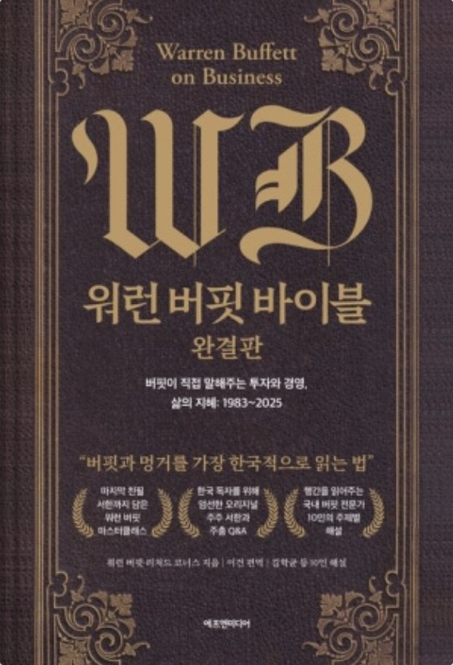

드림주스 주식스터디 · 1강
Part 1
단기적인 성공의 불확실성과
실패의 공포에서 온다.
누군가는 주식 투자로 자산을 키워가는데,
즉, 주식 자체가 위험한 것이 아니라
‘잘못된 투자 방식’이 위험한 것!
잘못된 투자방식을 모두 제거하면 안전하다.
문제 1. 비싸게 사서 싸게 파는 위험
문제 2. 몰빵 / 단타 투자의 위험
문제 3. 공포와 욕심에 의한 감정적 투자
해결책. 올바른 마인드와 행동
문제 4. 정보 부족, 잘못된 정보 과다노출
해결책. 올바른 마인드와 행동만으로 부족, 그러면?
건강한 주식 투자 핵심 ⭐️⭐️⭐️⭐️⭐️
이 모든것을 해결해주는 건강한 주식 투자 핵심
장기 우상향 하는 우량 주식자산,
미국종합주가지수 ETF를
사 모으는 것!
Part 2
장기 우상향 하는 자산, 미국 종합주가지수 ETF
미국은 기축통화 패권 국가
2026년 6월 기준
| 구분 | 시가총액 (USD) |
|---|---|
| 미국 1위 기업: Nvidia | 5.21조 달러 |
| 미국 2위 기업: Alphabet | 4.59조 달러 |
| 한국 주식시장 전체 (KOSPI+KOSDAQ, 2025년 11월 기준) | 7.07조 달러 |
Part 3
우리가 선택할 ETF는 주식을 쉽고 안전하게 해주는 도구
Exchange Traded Fund (상장지수펀드)
ETF 시장가 ↔ 순자산가치(NAV) 차이
AP(지정참가회사)가 ETF 추가 발행·공급 → 가격 하락 → 괴리율 축소
AP가 ETF 매수·해지 후 환매 → 가격 상승 → 괴리율 축소
| 지수 | 구성 | 특징 | 대표 ETF |
|---|---|---|---|
| S&P500 | 미국 상위 500대 기업 | 미국 전체 시장 흐름 대표, 가장 많이 쓰이는 벤치마크 지수 | SPY, IVV, VOO, SPYM |
| 나스닥100 | 나스닥 상장 비금융 대형주 100개 | 애플, 테슬라, 마이크로소프트 등 기술주 중심 성장주 비중 높고 변동성 큼 | QQQ, QQQM |
| 다우존스 | 미국 30개 대형 우량주 | 미국 산업 대표주 30개에 집중 → 안정성과 배당 중심 | DIA, SCHD |

| 기간 | 하락 폭 | 하락 기간 | 전고점 회복 기간 |
|---|---|---|---|
| 2015.08–2016.02 | 약 –12% | 약 6개월 | 약 6개월 |
| 2018.01–2018.02 | 약 –10% | 약 1개월 | 약 12개월 |
| 2018.10–2018.12 | 약 –12% | 약 2개월 | 약 4개월 |
| 2020.02–2020.03 | 약 –33% | 약 1개월 | 약 6개월 |
| 2022.01–2022.10 | 약 –25% | 약 9개월 | 약 12~18개월 |
| 2024.06 | 약 –5~6% | 약 1개월 | 약 2~3개월 |
| 2024.10 | 약 –5~6% | 약 1개월 | 약 2~3개월 |
| 2025.02–04 | 약 –18% | 약 2개월 | 약 2.5~3개월 |
| 연도 | 연간 수익률 (%) | 3년간 연평균 수익률 (%) | 10% 이상 여부 |
|---|---|---|---|
| 2015 | +1.38 | — | — |
| 2016 | +11.96 | — | — |
| 2017 | +21.83 | 11.06 (2015~17) | ✔️ |
| 2018 | –4.38 | 9.80 (2016~18) | ❌ |
| 2019 | +31.49 | 16.98 (2017~19) | ✔️ |
| 2020 | +18.40 | 15.17 (2018~20) | ✔️ |
| 2021 | +28.71 | 26.87 (2019~21) | ✔️ |
| 2022 | –18.11 | 9.67 (2020~22) | ❌ |
| 2023 | +26.29 | 12.96 (2021~23) | ✔️ |
| 2024 | +25.02 (예측) | 11.73 (2022~24) | ✔️ |
| 2025 | +2.72 (6월 기준) | 18.68 (2023~25) | ✔️ |
“주식은 위험한 것이 아니라,
제대로만 하면 가장 현실적인 자산 증식 수단이다.”



→ 경제서적 100권 읽고 미국주식 장기투자하는 현역장교 투자자